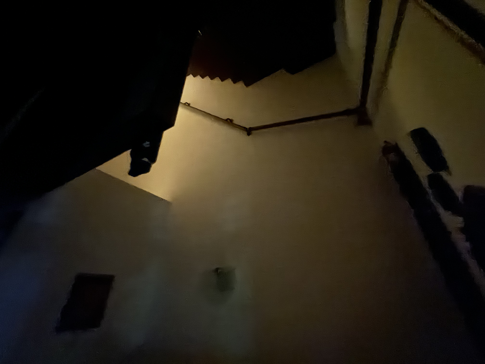
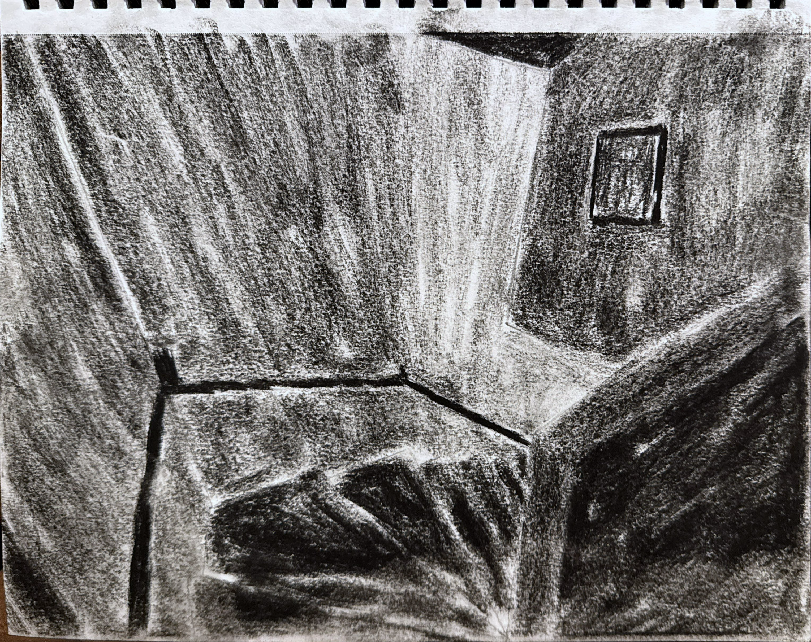
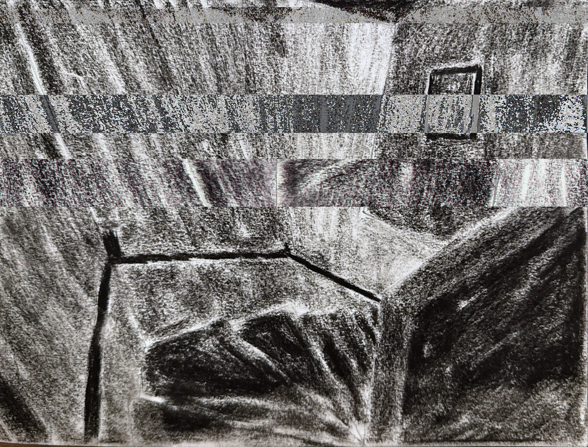

I used pictures of my grandparent's house I took on one of my past trips to visiting them (With their permission of course) as a reference for the next step.

I then drew them on my sketchbook and try to make the shading harsher.

I then open it to Photoshop, converted into a raw file, put it through Audacity and add filters to it to look like it is glitched.

I then proceeded to reworked the glitched image with Procreate to touch it up a little.